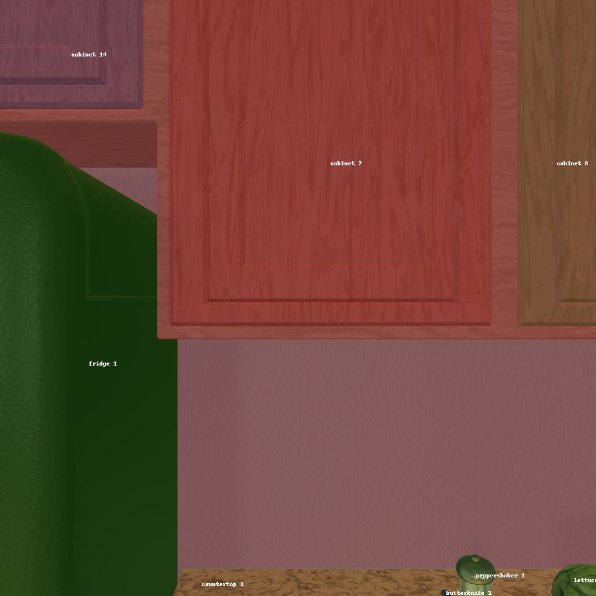

---------------------------------------------------------task: 23---------------------------------------------------------
--------------------------------------------------------------------------------------------------------------------------------------------------------------------
--------------------------------------------------------------------------------------------------------------------------------------------------------------------
Step:--------------------------------------------------------------------------18-------------------------------------------------------------------------------
----------------------------------------
VLM Prompt:
Image1:
**Instruction**
1. Analyze the provided image to identify all visible household objects, focusing on those relevant to the task description "put a hot mug in coffeemachine."
2. Use the analysis of the image and the task hint "The agent must find an object of the desired type, pick it up, go to a microwave, heat the object with the microwave, then find the correct location to place it, and put it down there. The agent does not need to use the microwave button or open the microwave to heat the object, and the agent just needs to do action that is "heat the object with the microwave"." to answer the question: what is the most reasonable action in the choices for the task description "put a hot mug in coffeemachine"?
4. Decide and write the answer using the template: The answer is: (i): , where i is the real number. If there is no desired object in the image, search every place based on **Initial Observation** to find the object. And if no one is exactly correct, choose a similar answer.
**Initial Observation**
You are in the middle of a room. Looking quickly around you, you can see cabinet (1-15), fridge (1), countertop (1-4), drawer (1-4), microwave (1), toaster (1), coffeemachine (1), garbagecan (1), sink (1), stoveburner (1-3), sinkbasin (1)
**Answer Choices**
(1): go to cabinet 2
(2): go to cabinet 3
(3): go to fridge 1
(4): go to countertop 1
(5): go to cabinet 5
(6): go to cabinet 6
(7): go to drawer 1
(8): go to drawer 2
(9): go to cabinet 8
(10): go to drawer 3
(11): go to cabinet 9
(12): go to cabinet 10
(13): go to drawer 4
(14): go to microwave 1
(15): go to cabinet 11
(16): go to toaster 1
(17): go to cabinet 12
(18): go to cabinet 13
(19): go to cabinet 14
(20): go to cabinet 15
(21): go to countertop 2
(22): go to coffeemachine 1
(23): go to garbagecan 1
(24): go to countertop 3
(25): go to countertop 4
(26): go to sink 1
(27): go to stoveburner 1
(28): go to stoveburner 2
(29): go to stoveburner 3
(30): go to sinkbasin 1
(31): open cabinet 7
(32): close cabinet 7
(33): examine cabinet 7
**Answer**
Let's think step by step by following the instructions.
----------------------------------------
----------------------------------------
Original Response:
The task is to put a hot mug in the coffeemachine. To complete this task, the agent must find a mug, heat it in the microwave, and then put it in the coffeemachine. The image shows cabinet 7, cabinet 9, and cabinet 14, as well as a fridge, countertop, and some items on the countertop, including a butter knife and lettuce. Since mugs are typically found in cabinets or on countertops and none are visible on the countertop in the image, the agent should first check the cabinets.
None of the cabinets shown in the image are open, so the agent cannot see inside them to locate a mug. Therefore, the agent must search the cabinets based on the Initial Observation list provided. The image does not show a microwave, but since we know there is one from the Initial Observation list, the agent will need to go to the microwave eventually to heat the mug.
Based on the above analysis, the most reasonable action from the choices provided is to go to a cabinet that has not been shown in the image yet, as it might contain a mug. Once the agent has the mug, the next step would be to go to the microwave to heat it. However, since the image does not show the coffeemachine or the microwave, the agent must rely on the Initial Observation to determine their locations.
Given the task description and the information at hand, the most reasonable action to start with is to go to one of the cabinets not visible in the image to find a mug. Looking at the answer choices, we can eliminate all actions related to the visible cabinets (cabinet 7, 9, and 14), the countertop (since no mug is visible), and other irrelevant objects and locations.
The answer is: (1): go to cabinet 2. This action is chosen as it is the first cabinet that is not visible in the image, where a mug might be found. If the mug is not in cabinet 2, the agent can proceed to search other cabinets following the Initial Observation.
----------------------------------------
----------------------------------------
>>> Refine Original VLM Response and Get Pure Action: go to cabinet 2
----------------------------------------
-----------------------------------------------------------------
Running time: 22.19548010826111 seconds
Total Money: 8.437520000000005
-----------------------------------------------------------------
-----------------------------------------------------------------
Text Observation:You arrive at loc 1. The cabinet 2 is closed.
-----------------------------------------------------------------
UNSUCCEED